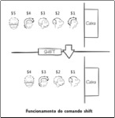

| Livro Shell Script Profissional no topo da lista dos mais vendidos |
  |
| Aproveite a promoção na Novatec |
 |
Informações
| Título | Shell Script Profissional |
| Autor | Aurelio Marinho Jargas (site, blog, twitter) |
| Editora | Novatec |
| Páginas | 480 |
| Formato | 17 x 24 cm |
| Ano | 2008 |
| Lançamento | 04 de Abril de 2008 (anúncio do autor, autógrafos no FISL) |
| ISBN | 978-85-7522-152-5 |
| Preço | R$ 85,00 |
| Comprar | Os links estão ali no menu preto, à esquerda |
 |
Download
 |
Sumário |
 |
Capítulo 4 - Opções de linha de comando (-f, --foo) 40 páginas, 450 KB |
| Códigos-fonte dos programas ensinados: veja no GitHub ou baixe o zip |
Resenha
"Fui mexer num script e levei horas para me achar nele. Estava uma bagunça, tudo amontoado, feio mesmo. Não tinha um único comentário para me ajudar. Os nomes de variáveis então? Era $a, $b, $tm, $cs... O que é um cs? É um caos, isso sim."
Você já passou por algo parecido? O inesquecível pesadelo de dar manutenção em um script mal feito. É tanto tempo perdido tentando achar o ponto certo, que às vezes o melhor é reescrever tudo.
O livro Shell Script Profissional ensina a fazer programas de qualidade em shell, com ênfase em código legível, portabilidade e manutenção futura. Melhore seus scripts, adicionando opções de linha de comando, arquivo de configuração, banco de dados e interface amigável ao usuário. Use a internet para rodar seu CGI. Domine as ferramentas do sistema, as expressões regulares e os caracteres de controle.
Indicado para administradores de sistemas, programadores, analistas, estudantes e usuários avançados. Indispensável para quem quer dominar o assunto. Os ensinamentos poderão ser usados em diversos sistemas, incluindo Unix, Linux, Mac e Windows.
Saiba mais em www.shellscript.com.br.
Testemunhos
Apenas um adjetivo: Excelente!
-- Marcio Henrique (São Paulo - SP)
O livro é perfeito.
-- Weslei Moreno Mendes (Mariluz - PR)
Perfeito. O melhor livro que já comprei. Fico feliz por ter feito tal investimento.
-- Caio Cesar Ceccon de Azevedo (Rio de Janeiro - RJ)
O livro é perfeito. O Aurelio consegue ser didático e técnico na medida certa. Só não aprende quem não quer.
-- Alex Sandro Barbosa Cruz (Recife - PE)
Definitivamente, é o melhor livro de informática/computação que já adquiri.
-- Cícero Julião da Silva Junior (Maceió - AL)
O melhor livro técnico que eu já li.
-- Thiago Nunes Vilela (Mauá - SP)
Com toda certeza este é o melhor livro técnico que já li. Melhorei a qualidade dos meus programas de maneira incomparável.
-- Wesley Rodrigues da Silva (São Paulo - SP)
No que diz respeito a livros, foi minha melhor aquisição de toda a vida.
-- Jeferson dos Santos (Rio de Janeiro - RJ)
Genial. Simples, direto e muito bem explicado.
-- Bruno Gonçalves Tikami (São Paulo - SP)
Não poderia ser melhor.
-- Fabio Maximo (Campinas - SP)
Simplesmente tinha tudo que eu precisava saber no livro! Recomendo a compra 120%.
-- Viktor Mota (Vitória - ES)
Vale a pena, até para quem acha que sabe tudo como eu...
-- Roger Boff (Florianópolis - SC)
Comprei o livro e posso dizer que foi um dos melhores investimentos que já fiz. Realmente estávamos precisando de uma publicação desse nível no Brasil. Perfeito para profissionais que queiram aprender a criar programas (e não scripts) em shell.
-- Rodrigo Amorim Ferreira (São Paulo - SP)
Foi o primeiro livro técnico que consegui ler do início ao fim, sem pular nada, como se fosse um livro de ficção. O que ganhei de produtividade com as dicas do livro valeu cada centavo investido na compra. E olha que sendo estagiário fica meio brabo de comprar as coisas :-)
-- Guilherme Magalhães Gall (Petrópolis - RJ)
Excelente livro, mostra dicas maravilhosas sobre shell script, realmente um trabalho majestoso que merece reconhecimento.
-- Wellington Alves Cabral (São João de Meriti - RJ)
Essa é uma verdadeira obra de arte que não encontrávamos no Brasil. Você que está lendo esse comentário e ao mesmo momento com uma pequena dúvida de comprar o livro, siga em frente, adicione-o à cesta e seja um programador de verdade.
-- Fábio Campos Coelho (Itabuna - BA)
Comprei o livro nesta tarde de domingo, era o único exemplar, e depois que o peguei em mãos não consegui mais largar. Já tive belas idéias para incrementar meus scripts de manutenção que uso no trabalho e transformá-los em programas de verdade. Está de parabéns pelo livro e que seja um sucesso.
-- Antônio Pessoa (Recife - PE)
Trabalho com redes e linux, conheço razoavelmente o sistema e adoro Shell, tenho alguns scripts aqui que me ajudam muito, e com o livro estou aperfeiçoando.
-- Marcelo Conti (Arapongas - PR)
Sou um Analista de Sistemas Java e sempre desenvolvi em ambientes Linux, desde 10 anos atrás. Sempre usei Shell Script para as tarefas mais básicas, mas se a complexidade aumentava eu usava Perl. Desde que eu comprei o seu livro, passei a usar Shell para tudo :-)
-- Sérgio Oliveira (São Paulo - SP)
Livro muito bom, de fácil entendimento e serviu para me auxiliar onde eu estava precisando, tirando todas as minhas dúvidas.
-- Rafael Iguatemy (Rio de Janeiro - RJ)
Trabalho com Linux há algum tempo, mas nunca tive conceitos bem fundamentados de programação em Shell Script, o que o seu livro me proporcionou.
-- Guilherme Rezende (Santa Rita do Sapucai - MG)
O livro é excepcional, ensinando tópicos complexos com bom humor e mostrando a cada capítulo o caminho das pedras de como programar. Gostei tanto dos primeiros capítulos que vamos utilizar na empresa, pois os iniciantes geralmente não conhecem as boas práticas, como comentários, cabeçalhos de scripts e como separar os blocos lógicos. Enfim, recomendado para quem realmente quer ser profissional em shell.
-- Douglas Soares de Andrade (Brasília - DF)
Estou com o livro aberto nesse minuto ao meu lado, lendo quando devia estar dormindo e achando muito massa! De verdade! Ah, como é bom ler um texto técnico feito por alguém que realmente sabe escrever, o que é coisa rara na área. Sinceramente, meus parabéns!
-- Daniel Duclós (Amsterdam - Holanda)
Gostei muito da abordagem que você faz no livro, pois não só ensina o Shell de fato, como orienta e incentiva boas práticas de programação.
-- Samir Braga
Sou estudante da FATEC-OU, faço ASTI (Análise de Sistemas e Tecnologia da Informação) e comprei o livro para entender melhor o funcionamento dos scripts feitos em shell e ele está sendo muito útil. Com ele ao meu lado comecei a fazer meus primeiros scripts.
-- Lucas de Biaggi Januário (Ourinhos - SP)
Já estou quase no meio dele, desde que comprei, não consegui desgrudar! Como em todos os textos e os outros livros do Aurelio, você não tem a impressão de ler um livro, e sim, de que está falando pessoalmente com ele! Com uma didática impressionante que além de ensinar, faz com que você aprenda de forma natural. Recomendo para qualquer um que goste de "brincar" na linha de comando!
-- Tiago Oliveira de Jesus (São Paulo - SP)
Ótimo livro. Descontraído e gostoso de ler, obras como estas enriquecem o aprendizado. Parabéns.
-- Alceu de Lima Sampaio (Boa Vista - RR)
Os livros do Aurelio, apesar do conteúdo técnico, podem ser lidos do início ao fim como se fosse um livro de ficção. Cada capítulo influencia o leitor a seguir em frente, o que torna a leitura muito mais divertida. Recomendo.
-- Bruna Griebeler (RS)
Antes de ler esse livro, desenvolvia scripts sem tomar qualquer cuidado com o fonte, o meu objetivo era apenas que ele "fizesse o que era pra fazer...". Hoje desenvolvo verdadeiros programas, que qualquer pessoa com o devido conhecimento básico da linguagem, seria capaz de compreender o conteúdo e dar a devida manutenção ao mesmo. Lendo esse livro, você percebe a sutil diferença entre scripts e programas.
-- Thiago Santana (grupo shell-script)
Não conheço o Aurelio e não tenho motivos pra fazer jabá de graça pra ele, realmente só estou dando a dica pois o livro é muito bom. O livro não leva o nome "Profissional" por nada. O autor procura, após ensinar os conceitos, passar ao leitor boas práticas para realizar tarefas recorrentes (documentação, tratamento de parâmetros da linha de comando, entre outros).
-- Caio Moritz Ronchi (SC)
É um material indispensável na mesa de qualquer administrador de sistemas ou quem deseja se aprofundar em linha de comando.
-- Christiano Anderson (SP)
Que livro bonito! Que edição bem cuidada! Da capa à página final, um livro próprio para a cabeceira. Imagino a trabalheira para organizar e escrever os capítulos, mas já nasceu como um clássico do assunto. Um livraço!
-- Franklin Carvalho (SP)
Esse é um livro que eu recomendo sem hesitar. O Aurelio tem um histórico de bons trabalhos invejável, mas dessa vez se superou: o conteúdo de seu novo livro é riquíssimo e, na minha opinião, é leitura obrigatória para desenvolvedores ou para quem quer se aventurar no mundo do shell script.
-- Emerson Alecrim, Blog InfoWester
O que marca mesmo o trabalho do Aurelio, além da sua qualidade, é a forma didática e divertida como aborda temas complexos. Aprender a programar em shell com seu novo livro será uma experiência, antes de tudo, agradável e divertida.
-- Rubens Queiroz, Portal Dicas-L
O livro é muito bem trabalhado. O texto é bem divertido e o conteúdo é excelente. Vale lembrar que não é um livro para iniciantes, ou uma simples apostila. É um trabalho cuidadoso que, além de trazer à tona as técnicas para um uso profissional de shell scripting, nos mostra vários pontos interessantes sobre questões mais gerais da programação, como qualidade e legibilidade do código produzido. Se você já conhece alguma coisa de shell script e quer aprofundar seu conhecimento, vale a pena dar uma olhada.
-- Flávio Amieiro, Fórum Meio Bit
O capítulo final "Dicas preciosas" é um achado, assim com o Apêndice C, que disseca e comenta várias das Funções ZZ e dos truques empregados nelas pelo autor. Recomendo!
-- Augusto Campos, Portal BR-Linux
Antes de começar a falar especificamente sobre a programação em Shell, o Aurelio usa os capítulos 1 a 3 para falar como deve ser um bom programa. Ele faz isso de maneira tão clara, objetiva, e bem recheada de exemplos, que acho que só esses três capítulos já poderiam ser vendidos em separado para qualquer um que quer tornar-se um bom programador. Vou mais longe: estes capítulos deveriam ser a introdução de todos os outros livros abordando linguagens de programação.
-- Cesar Brod, colunista da Dicas-L
Como era "o livro do Aurelio", abri interessado pois seus textos nunca são técnicos o bastante para serem técnicos. São na verdade um romance daqueles que se lê em uma confortável poltrona deleitando-se com cada uma das palavras. E este livro não é diferente. Até mesmo para leigos como eu, seus ensinamentos simplesmente aparecem diante dos olhos de forma clara e o assunto torna-se a cada página, mais interessante, mais envolvente. [...] O livro Shell Script Profissional é obra obrigatória de aquisição e cada centavo gasto será recompensado da melhor forma possível: conhecimento de verdade. Não acredita? Compre e leia. Se não ficar satisfeito eu devolvo seu dinheiro.
-- Paulino Michelazzo, Blog Maçãs Cercadas por Pingüins
Recomendo a todos os colegas da área, que possuem um pezinho no mundo do Pinguim, ler o livro Shell Script Profissional. São centenas de boas dicas de como programar feito gente grande em Shell, bons puxões de orelha, descontração e muito, mas muito código mesmo. E isso tudo para não falar de uma didática que me surpreendeu por fazer você se lembrar de uma conversa com aquele colega de trabalho bacana que saca pra caramba de algum assunto interessante. [...] Aurelio, parabéns por essa grande conquista: Escrever como uma pessoa normal para pessoas normais que gostam de programar.
-- Moacir Filho, Blog Completely Forgotten
O livro conta com grandes técnicas de programação e depuração, capazes de tornar seus scripts muito mais profissionais e de fácil manutenção, evoluindo-os ao patamar de programas completos. [...] Uma aquisição indispensável para todos que desejam utilizar essas poderosas ferramentas que vêm disponíveis em qualquer distribuição Linux. [...] Com todas as dicas e os guias de referência contidos no livro, a tarefa de programação em Shell torna-se muito mais prazerosa e útil para todos. Este é um livro que tem tudo para tornar-se um best seller no universo do Software Livre.
-- necropresto, Grupo de Usuarios Slackware Brasil
Não costumo fazer reviews, nem puxar o saco de autores, mais essa é uma das raras situações. [...] É um livro excelente, leitura leve, agradável, não usa uma linguagem muito técnica que facilita muito o entendimento. [...] Recomendo a todos que desejam aprender mais sobre shell script ou que estão iniciando no mundo da programação (não só sobre shell script).
-- VonNaturAustreVe
Bem, não tem nem como descrever esse livro - me falta palavras - além de aprender como nunca aprendi sobre shell script na vida, ri a beça. Acho que deve ser por isso, a receita certa é essa. Se divertir enquanto aprende. Não tive como não lê-lo até o final e voltar sempre que preciso. Com este, vou ficar a consultar por um bom tempo.
-- Maycon Rodrigo Moreira (Palhoça - SC)
Leitura recomendada para todos, não só no sentido da programação mas com o livro também se aprende sobre comandos no Linux e suas funcionalidades. [...] Nas primeiras páginas já noto o zêlo no qual o autor escreve, preocupando-se sempre com o leitor usando uma liguagem bastante acessivel e descontraida.
-- Douglas Barbosa, blog O Seo Messias
A linguagem adotada é excelente, que prende o leitor, explicações simples e eficazes. Confesso que até o momento da leitura, não utilizava nem a metade das orientações do livro, como: Nomes padronizados para variáveis e Flags, Changelog, etc... No máximo eu utilizava apenas identação e comentários.
-- Marcelo Ribeiro
Pô, como falar mal de um livro escrito pelo Aurelio? O cara escreve bem, manda bem e sabe explicar. É um livro técnico, não chato de ler - sim, isso existe. [...] Os primeiros capítulos do livro deveriam ser obrigação de leitura para qualquer pessoa que se diga programador. [...] Os capítulos seqüentes abordam o que o título sugere: SHELL SCRIPT. De uma maneira profunda e profissional, te dá excelentes idéias e clareia sua mente para um mundo mais automatizado (e amigável). Recomendo, com certeza!
-- Leonardo Saraiva
Ao contrário dos livros tradicionais, ele traz uma organização interna diferenciada e que privilegia aqueles que já possuem algum conhecimento e desejam, a partir de uma abordagem prática orientada por situações reais, incrementar sua capacitação na linguagem. [...] Um exemplar desse livro, com certeza, deve ter espaço reservado na prateleira daqueles que, independente da necessidade, precisam lidar com shell scripts. Seja como um manual de consulta, seja como um guia de estudo, vale a pena prestigiar o trabalho do Aurelio!
-- Jansen Sena, resenha para a Revista PC & Cia
Ainda não cansou de ler testemunhos? Então vai lá no site da editora que tem mais.
Dúvidas
Eu já tenho o livro "Programação Shell Linux" do Julio Neves, devo comprar o seu também?
Sim.
O meu livro é complementar ao Programação Shell Linux, do Julio. Você pode encará-lo como o segundo passo. É indicado para aqueles que querem realmente dominar o assunto.
- O que você já aprendeu sobre o shell e seus comandos, será agora aprofundado.
- Você aprenderá de maneira didática como escolher os comandos corretos e como usá-los em conjunto para fazer um programa rápido e eficiente.
- Você aprenderá a fazer programas completos em shell, com opções, código limpo, arquivo de configuração, banco de dados e interface amigável.
- Você aprenderá a transformar seus scripts em programas de qualidade profissional.
Leia o PDF do Capítulo 4 para perceber rapidamente a proposta do livro, de aprendizado seqüencial. Primeiro é explicado o conceito e sua aplicação prática. Depois é ensinado passo a passo como adaptar um programa já existente para ter opções. Você vai evoluindo junto com a leitura.
Perceba como cada passo é detalhado com explicações claras e exemplos. Veja em negrito as mudanças no código, acompanhando com facilidade a evolução do programa. Tudo tem um porquê e cada alteração é explicada de maneira completa. Há também várias dicas de programação no meio do texto, tornando seu aprendizado ainda mais rico. Figuras como a da página 77 tornam fáceis conceitos complicados.
|  |
| Figuras didáticas explicam os conceitos |
{kind=link}
Eu nem sei o que é shell, devo comprar seu livro?
Não.
Este livro é indicado para pessoas que já possuem um conhecimento básico sobre shell, como por exemplo saber usar a linha de comando e fazer scripts simples. Se você quer aprender o básico, consulte o portal de shell script e estude os vários guias gratuitos ali listados. Recomendo também a compra do livro Programação Shell Linux, do meu amigo Julio Cezar Neves, que ensina o básico.
Tour
- Capítulo 1 - Programas sim, scripts não
- Este livro ensina a fazer programas e não scripts. Seu objetivo é transformar "scripteiros" em programadores, dando o embasamento necessário e ensinando as boas práticas da programação. Isso melhorará a qualidade do código, facilitando muito o trabalho de manutenção futura. Chega de reescrever scripts porque o código original estava incompreensível, chega de dores de cabeça pela falta de limpeza e organização. Aprenda a fazer programas em shell, do jeito certo.
- Capítulo 2 - Controle de qualidade
- Um bom profissional sabe como fazer um trabalho de qualidade. Isso faz parte do seu dia a dia, não é preciso esforçar-se. A atenção aos detalhes e a busca por um resultado "perfeito" são algumas de suas características. Aprenda quais são os componentes que farão seu programa em shell ser considerado profissional. Destaque-se, faça o melhor, faça o todo.
- Capítulo 3 - Chaves (flags)
- Usar chaves (flags) é uma maneira limpa e organizada de programar. O conceito é bem simples, muito fácil de ser assimilado e colocado em prática. Aprenda a separar a coleta de informações e o processamento, fazendo cada um em um passo distinto. Isso simplificará seus algoritmos, melhorando a legibilidade do código e facilitando o trabalho de manutenção futura.
- Capítulo 4 - Opções de linha de comando (-f, --foo)
- Trazer mais opções e possibilidades para o usuário é algo que faz parte da evolução natural de um programa. Mas não é elegante forçar o usuário a editar o código para alterar o valor de variáveis, cada vez que precisar de um comportamento diferente. Aprenda a fazer seu programa reconhecer opções de linha de comando, curtas e longas, tornando-o mais flexível e amigável ao usuário. Leia este capítulo agora...
- Capítulo 5 - Depuração (debug)
- À medida que os programas crescem e sua complexidade aumenta, começa a ficar difícil memorizar todo seu funcionamento. Quando aparece um problema, pode demorar até encontrar o ponto exato onde ele acontece. Aprenda a usar as técnicas de depuração para monitorar tudo o que acontece durante a execução do seu programa. Veja quais comandos foram executados, inspecione o conteúdo de variáveis e estados de chaves. Levante o capô do carro e veja como tudo funciona.
- Capítulo 6 - Caracteres de controle
- Você pode programar por vários anos sem saber que os caracteres de controle existem. Mas uma vez descobertos, abrem as portas para inúmeras possibilidades de melhoria para seus programas. Aprenda a mostrar textos coloridos na tela, posicionar o cursor, fazer animações simples e até emitir som. Use estes recursos com sabedoria e eleve a experiência do usuário a um novo nível.
- Capítulo 7 - Expressões regulares
- "Conheci as expressões regulares e minha vida mudou. De repente, várias linhas de código com loops, testes e contadores puderam ser trocadas por uma única linha mágica que faz tudo." Este é um depoimento comum de se ouvir de um recém-convertido. Aprenda a dominar todos os símbolos que compõem uma expressão regular, entendendo até mesmo aquelas mais complicadas. E prepare-se, seus programas nunca mais serão os mesmos.
- Capítulo 8 - Extração de dados da Internet
- Atualmente muitas das informações necessárias para uso pessoal e profissional estão disponíveis na Internet. Este é um novo campo de atuação para seus programas, que podem automatizar o processo de obtenção e tratamento destas informações. Aprenda a baixar, manipular e extrair dados de sites, blogs e feeds RSS/Atom.
- Capítulo 9 - Arquivos de configuração
- Você já usa opções de linha de comando em seu programa. Isso o torna amigável para usuários avançados que utilizam o terminal. Mas usuários que não têm tanta intimidade com a máquina ficarão intimidados. Aprenda a utilizar arquivos de configuração, permitindo que seus usuários apenas editem um arquivo de texto normal para modificar o comportamento de seu programa. Além de ficar mais amigável, gerará menos chamados de suporte para você.
- Capítulo 10 - Banco de dados com arquivos texto
- Guardar e acessar dados é uma necessidade básica para vários tipos de programas. Usar um banco de dados tradicional para um programa de pequeno e médio porte geralmente é um exagero. A solução é usar os próprios recursos do sistema para simular as funcionalidades básicas de um banco. Aprenda a utilizar arquivos de texto para o armazenamento de dados, eliminando a necessidade de um banco relacional.
- Capítulo 11 - Interfaces amigáveis com o Dialog
- Seu programa não precisa ficar restrito à interface de linha de comando. Usuários em geral estão acostumados às interfaces mais coloridas e interativas, com suas janelas, botões e menus. Aprenda a dar esta roupagem mais amigável ao seu programa, fazendo-o funcionar como um aplicativo gráfico. No processo você vai descobrir que além de facilitar a vida do usuário, você ainda simplifica seus códigos, eliminando verificações que tornam-se desnecessárias devido à natureza restrita da interface.
- Capítulo 12 - Programação Web (CGI)
- Apesar de todas as melhorias já feitas em seu programa, como opções de linha de comando e interface amigável, ele continua restrito ao terminal. Que tal libertar de vez seu programa, deixando-o disponível para que qualquer pessoa do mundo possa usá-lo através da Internet? Aprenda a fazer seu programa funcionar como um CGI, usando a Internet como meio de comunicação e o navegador como interface com o usuário.
- Capítulo 13 - Dicas preciosas
- Nenhum livro pode ensinar a experiência vivida, mas ele pode documentá-la. Programo em shell há vários anos, tendo feito muitos scripts e programas. Eles rodaram em muitas máquinas, configurações e sistemas diferentes. Cada ambiente trouxe seus próprios desafios, limitações e peculiaridades, exigindo adaptações nos programas. Aprenda com esta experiência, estudando com atenção cada uma destas dicas. Seus cabelos agradecerão ;)
- Apêndice A: Shell básico
- Se você nunca brincou de shell e quer saber do que se trata, então estude este capítulo com atenção, digite os exemplos e tente fazer todos os exercícios. Se você já conhece o shell e está precisando de um refresco para a memória antes de mergulhar nos estudos deste livro, passeie por este capítulo e teste seus conhecimentos. Se você já leu todo o livro e acompanhou o conteúdo sem dificuldade, pode saltar este capítulo sem dó.
- Apêndice B: Shell no Linux, Mac e Windows
- O programa que você fez no Linux vai funcionar no Windows? E no Mac? Como é a compatibilidade entre eles? Como instalar o Bash e as ferramentas no Windows? Como testar um programa no Mac? Como lidar com as quebras de linha do Windows? Onde está o terminal? E o dialog, como fazê-lo funcionar fora do Linux? E a acentuação no Cygwin? As respostas para estas e outras perguntas estão neste capítulo. Aproveite!
- Apêndice C: Análise das Funções ZZ
- Se um exemplo vale mais do que mil man pages, então este apêndice sozinho vale mais do que dezenas de livros de shell :) Acompanhe uma análise detalhada do código das Funções ZZ, um programa maduro, focado em compatibilidade e facilidade de uso, que vem sendo lapidado há mais de oito anos! Conheça as técnicas utilizadas, desvendando os segredos de um programa avançado.
- Apêndice D: Caixa de ferramentas
- O programador shell deve ter uma visão geral de quais são as ferramentas disponíveis no sistema, para quando precisar, saber por onde começar a procurar. Além desse conhecimento geral, o programador deve ser especialista nas ferramentas básicas, aquelas que independente da área de atuação estão sempre presentes nos programas. Conheça estas ferramentas essenciais e suas principais opções.
- Apêndice E: Canivete Suíço
- O Canivete Suíço é um resumo das características do shell e dos comandos do sistema. São várias tabelas que listam operadores, variáveis, opções, parâmetros, conceitos e dicas. É uma quantidade imensa de informações em um formato fácil de consultar. Use como guia de referência rápida nos momentos de dúvida. Estude as tabelas para aprender mais sobre o shell.
Outros livros do mesmo autor
Links rápidos:
- Compre direto com a editora
- Compre pelo Submarino (eu ganho comissão de 3%)
Notícias
Comprar
- Novatec (editora)
- Submarino ★
- Amazon
- Americanas.com
- BestBooks
- Cia dos Livros
- Cultura
- Curitiba
- Martins Fontes
- Saraiva
- Siciliano
Compare preços